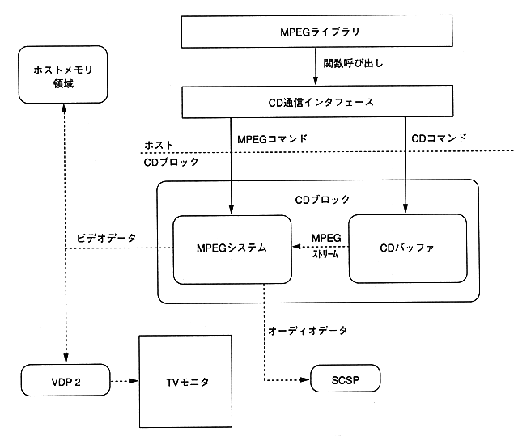

This library is for controlling the MPEG system on the CD block. The MPEG system has the following functions.
- Video playback function
- Still image playback function (high definition is also possible)
- Window function
- Capturing function
- Visual effect function
- Smooth branch playback function
The MPEG library controls the CD block by the CD communication interface. The MPEG system reads and decodes an MPEG stream from a CD buffer in a CD block. Decoded image data can be output in the following two ways.
- Direct output to TV monitor via VDP2. (16 million colors)
- Method to output to VDP1 after transferring to host area. (32000 colors)

Figure 1.1 Overview of MPEG system